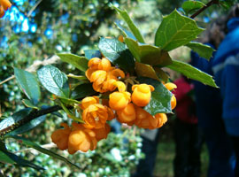

Gran parte del sendero transita en forma paralela a las costas del canal Beagle, esta faja es de escasa altitud, donde la humedad es aún mayor, las temperaturas son menos extremas y las heladas menos frecuentes. En ella el guindo también forma bosques mixtos con distintos grados de participación de las especies, junto a Drimys winteri, denominado vulgarmente “canelo”, Maytenus magellanica o “leña dura” y Embothrium coccineum (Notro), las tres de hoja perenne y relativamente grande.
Las dos últimas especies son más bien arbustivas y siempre se encuentran en un estrato inferior al guindo y en mucho menor proporción respecto de éste. También puede aparecer en esta mezcla la lenga, codominando en el estrato superior con el guindo. Estos bosques son multiestratificados y oscuros, con sotobosques ralos, salvo en los claros y poseen una apariencia casi selvática.
Notro
Perezia
Michay
Flor de Canelo